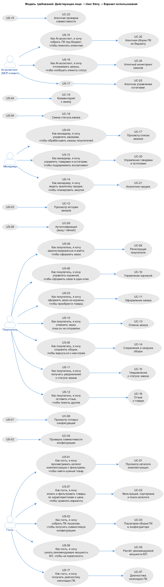
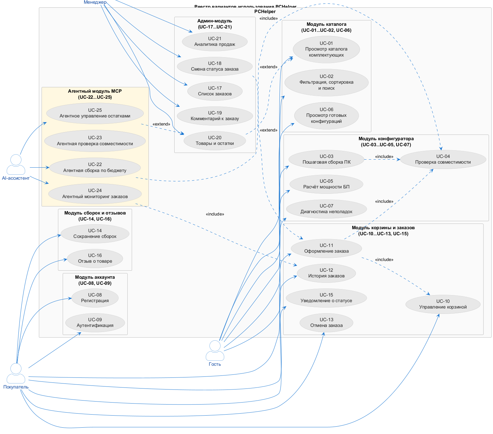

Действующие лица системы
| Действующее лицо | Тип | Описание |
|---|---|---|
| Гость | Человек | Неавторизованный посетитель: каталог, конфигуратор, расчёт БП, диагностика |
| Покупатель | Человек | Авторизованный пользователь: корзина, заказы, сохранённые сборки, отзывы |
| Менеджер | Человек | Сотрудник магазина: заказы, товары, остатки, аналитика |
| AI-ассистент | Внешняя система | LLM-клиент (Claude Desktop, Cursor), работающий через MCP-сервер |
| Платёжный сервис | Внешняя система | Приём онлайн-оплаты |
| Сервис уведомлений | Внешняя система | Отправка e-mail о смене статуса заказа |
Роли Гость и Покупатель объединяют в модели требований одного действующего лица «Покупатель», поскольку API различает их только уровнем аутентификации (FR-08), а не набором функций: неавторизованный пользователь может выполнять ровно те же операции каталога и конфигуратора.
Модель требований: Действующее лицо → User Story → Use Case
Файл: diagrams/plantuml/01-requirements-model.puml

Диаграмма построена по принципу прослеживаемости (traceability): от каждой пользовательской истории можно перейти к прецеденту, а от прецедента — в разделе 3.3 к конкретному HTTP-методу и маршруту. Сквозная цепочка «требование → история → прецедент → маршрут → тест-кейс» является главным артефактом лабораторной работы.
Полный перечень User Stories
| ID | Действующее лицо | Формулировка | Источник |
|---|---|---|---|
| US-01 | Гость | Как гость, я хочу просматривать каталог комплектующих с фильтрами, чтобы найти нужный товар | ЛР3 |
| US-02 | Гость | Как гость, я хочу собрать ПК пошагово, чтобы получить совместимую конфигурацию | ЛР3 |
| US-03 | Покупатель | Как покупатель, я хочу оформить заказ из корзины, чтобы приобрести выбранные товары | ЛР3 |
| US-04 | Менеджер | Как менеджер, я хочу просматривать и изменять статусы заказов, чтобы обрабатывать заказы покупателей | ЛР3 |
| US-05 | Покупатель | Как покупатель, я хочу сохранять конфигурации, чтобы вернуться к ним позже | ЛР3 |
| US-06 | Гость | Как гость, я хочу узнать рекомендуемую мощность БП, чтобы не переплатить | ЛР4 |
| US-07 | Гость | Как гость, я хочу искать и фильтровать товары по характеристикам и цене, чтобы сравнить варианты | ЛР4 |
| US-08 | Покупатель | Как покупатель, я хочу зарегистрироваться и войти, чтобы оформить заказ | ЛР4 |
| US-09 | Покупатель | Как покупатель, я хочу управлять корзиной, чтобы оформить заказ в один клик | ЛР4 |
| US-10 | Покупатель | Как покупатель, я хочу отменить заказ, пока он не отправлен | ЛР4 |
| US-11 | Покупатель | Как покупатель, я хочу получать уведомления о статусе заказа | ЛР4 |
| US-12 | Покупатель | Как покупатель, я хочу оставить отзыв, чтобы помочь другим | ЛР4 |
| US-13 | Менеджер | Как менеджер, я хочу управлять товарами и остатками, чтобы поддерживать ассортимент | ЛР4 |
| US-14 | Менеджер | Как менеджер, я хочу видеть аналитику продаж, чтобы планировать закупки | ЛР4 |
| US-15 | AI-ассистент | Как AI-ассистент, я хочу собрать ПК под бюджет, чтобы помогать клиентам | ЛР4 |
| US-16 | AI-ассистент | Как AI-ассистент, я хочу отслеживать заказы, чтобы сообщать клиенту статус | ЛР4 |
| US-17 | AI-ассистент | Как AI-ассистент, я хочу проверять остатки, чтобы предупреждать менеджера | ЛР4 |
Реестр вариантов использования
Файл: diagrams/plantuml/02-usecase-registry.puml

Таблица реестра
| ID | Вариант использования | Актёр | Источник | Связи |
|---|---|---|---|---|
| UC-01 | Просмотр каталога комплектующих | Гость | US-01 | — |
| UC-02 | Фильтрация, сортировка и поиск каталога | Гость | US-07, US-01 | — |
| UC-03 | Пошаговая сборка ПК в конфигураторе | Гость | US-02 | <<include>> UC-04 |
| UC-04 | Проверка совместимости конфигурации | Гость | US-02 | вызывается из UC-03, UC-11, UC-22 |
| UC-05 | Расчёт рекомендуемой мощности БП | Гость | US-06 | — |
| UC-06 | Просмотр готовых конфигураций | Гость | US-01 | — |
| UC-07 | Диагностика неполадок ПК | Гость | US-01 | — |
| UC-08 | Регистрация покупателя | Покупатель | US-08 | — |
| UC-09 | Аутентификация (вход / refresh) | Покупатель | US-08 | — |
| UC-10 | Управление корзиной | Покупатель | US-09 | <<include>> в UC-11 |
| UC-11 | Оформление заказа | Покупатель | US-03 | <<include>> UC-10, UC-04 |
| UC-12 | Просмотр истории заказов | Покупатель | US-03 | — |
| UC-13 | Отмена заказа | Покупатель | US-10 | — |
| UC-14 | Сохранение и загрузка сборок | Покупатель | US-05 | — |
| UC-15 | Уведомление о статусе заказа | Покупатель | US-11 | <<extend>> UC-11 |
| UC-16 | Отзыв о товаре | Покупатель | US-12 | — |
| UC-17 | Просмотр списка заказов | Менеджер | US-04 | — |
| UC-18 | Смена статуса заказа | Менеджер | US-04 | <<extend>> UC-11 |
| UC-19 | Комментарий к заказу | Менеджер | US-04 | — |
| UC-20 | Управление товарами и остатками | Менеджер | US-13 | <<extend>> UC-01 |
| UC-21 | Аналитика продаж | Менеджер | US-14 | — |
| UC-22 | Агентная сборка ПК по бюджету | AI-ассистент | US-15 | <<include>> UC-04 |
| UC-23 | Агентная проверка совместимости | AI-ассистент | US-15 | — |
| UC-24 | Агентный мониторинг заказов | AI-ассистент | US-16 | <<include>> UC-12 |
| UC-25 | Агентное управление остатками | AI-ассистент | US-17 | <<extend>> UC-20 |
Итого 25 вариантов использования, покрывающих все семь функциональных модулей системы и все шесть ролей.
Полнота покрытия API
Проверка требований на полноту: каждый вариант использования должен иметь хотя бы одну конечную точку, каждое требование — хотя бы один UC.
| Требование | UC | Конечные точки (раздел 3.3) |
|---|---|---|
| FR-01 | UC-01 | GET /catalog/components, GET /catalog/components/{componentId} |
| FR-02 | UC-03, UC-04 | GET /configurator/steps, POST /configurator/validate, GET /configurator/compatible |
| FR-03 | UC-10, UC-11 | GET /cart, POST /cart/items, POST /orders |
| FR-04 | UC-12, UC-14 | GET /orders, GET /builds, GET /builds/{buildId} |
| FR-05 | UC-17…UC-19 | GET /admin/orders, PATCH /admin/orders/{orderId}/status |
| FR-06 | UC-14 | POST /builds, PUT /builds/{buildId}, DELETE /builds/{buildId} |
| FR-07 | UC-08, UC-09 | POST /auth/register, POST /auth/login, POST /auth/refresh |
| FR-08 | все защищённые UC | проверка роли в middleware requireRole |
| FR-09 | UC-04, UC-23 | POST /configurator/validate |
| FR-10 | UC-01, UC-02 | параметры page, limit, sort, фильтры |
| FR-11 | UC-13, UC-18 | POST /orders/{orderId}/cancel, PATCH /admin/orders/{orderId}/status |
| FR-12 | UC-20, UC-25 | PATCH /admin/stock/{componentId}, GET /admin/stock |
| FR-13 | UC-22…UC-25 | MCP-сервер: 13 Tools, 9 Resources, 5 Prompts |
| FR-14 | UC-22…UC-25 | журнал ЖурналДействийАгента + маскирование PII |
| FR-15 | UC-16 | POST /catalog/components/{componentId}/reviews |
| FR-16 | UC-21 | GET /admin/analytics/sales |
Вывод: требования покрыты полностью — «висячих» требований и прецедентов без конечных точек нет.